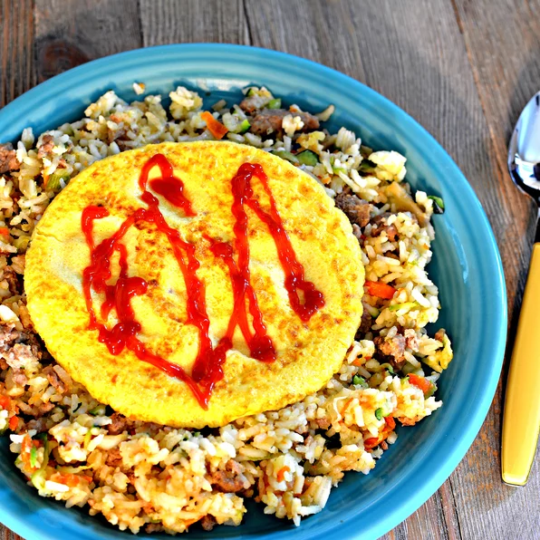

Fried Rice Recipe

Fried rice is a dish of cooked rice that has been stir-fried in a wok or a frying pan and
is usually mixed with other ingredients such as eggs, vegetables, seafood, or meat. It
is often eaten by itself or as an accompaniment to another dish.
Fried rice is a very simple dish that can be made by literally anyone. It is so simple
so delicious In this article I will teach you how to cook a fried rice like a pro.
INGREDIENTS
- 2 tablespoons cooking oil
- 2 cloves garlic, minced
- 115 g boneless and skinless chicken breast, cut into cubes
- 115 g shrimp, peeled, shelled and deveined
- 1 cup frozen mixed vegetables, thawed
- 340 g leftover steamed white rice
- 1 tablespoon fish sauce
- 1 tablespoon soy sauce
- 1/4 teaspoon oyster sauce
- 3 dashes ground white pepper
- 2 eggs, lightly beaten
- salt to taste
INSTRUCTION
- Heat up a wok or pan with the oil. Add the garlic and stir fry until aromatic, follow
by the chicken, shrimp, and mixed vegetables. Stir fry until the chicken and shrimp
are half cooked. Add in the rice and stir well with the ingredients. Add the fish
sauce, soy sauce, oyster sauce, white pepper and continue to stir the fried rice
for a couple of minutes.
- Using the spatula, push the rice to the side of the wok and make a "well" in the middle
of the fried rice. Pour the beaten eggs in the "well." Wait for 30 seconds and then cover
the eggs with the fried rice. Leave it for 30 seconds to 1 minute and continue to
stir-fry so the eggs form into small pieces and mix well with the fried rice.
Add salt to taste and do some quick stirs, dish out and serve hot.